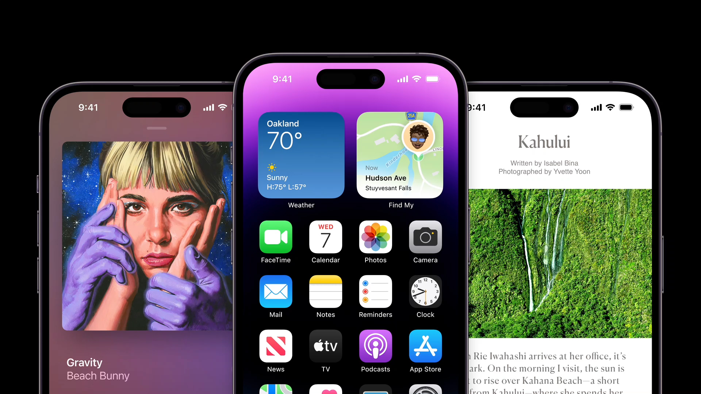

iPhone 14 Pro Review: New Features
iPhone 14 Pro comes with several new features and upgrades, such as an always-on display, Emergency SOS, and Dynamic Island - an interactive new display area that sits around the selfie camera.Specs
- Rear Camera: 48 MP + 12 MP + 12 MP
- Front Camera: 12 MP
- Battery: 3200 mAh
- Storage: 128 GB
- Display: 6.1 Inches
- Chipset: Apple A16 Bionic
- RAM: 6 GB
- Colours: Gold, Silver, Space Black, Deep Purple
New Features
Dynamic Island
Apple removes the notch on the iphone and replaces it with a new feature called the dynamic island. It is a pill shape cutout display at the top of the iphone that changes size and shape to display alerts, notifications, “what's playing”, and many more. It makes multitasking and navigating the phone more engaging and easier.
Emergency SOS and Crash Detection
Apple is also expanding the Emergency SOS catalog of features with an additional two. The first is Crash Detection which uses onboard sensors and software training to detect if you're in a “car crash” or “severe crash” to help you get help. The second new feature is Emergency SOS which enables you to text and connect with emergency services via satellite when you're out of cellular or Wi-Fi coverage.
Always on Display
Another new feature of the iphone 14 pro is the always-on display. It drastically lowers the brightness and refresh rate of the lock screens, all while maintaining reliable visibility. Its like a low power version of the lock screen that can show information when your phone is locked. It uses an extremely little amount of power to display the info. It can be useful when you quickly want to glance at the time without having to touch the phone.